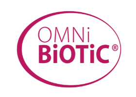

Spokojniejsza relacja z jedzeniem
Regularne posiłki zamiast kolejnych restrykcji.
Jestem Aleksandra Olesiewicz. Prowadzę konsultacje dietetyczne online i tworzę e-booki dla kobiet z PCOS i w perimenopauzie.

Współpracuję z markami, które znasz

W centrum naszej współpracy jesteś Ty. Twoje zdrowie, potrzeby i życie, do którego ma pasować plan.
kobiet, którym pomogłamPrzykładowa liczba do makiety
Regularne posiłki zamiast kolejnych restrykcji.
Obserwacja samopoczucia zamiast presji wyniku.
Małe kroki, do których można wracać.
Przykładowe efekty. Tu znajdą się potwierdzone historie pacjentek.


Pomagam kobietom z PCOS i w perimenopauzie uporządkować codzienne odżywianie.
W konsultacjach zaczynamy od Twoich potrzeb i codziennych nawyków. W e-bookach znajdziesz narzędzia do porządkowania pytań o badania, suplementację i zmiany w samopoczuciu.
Więcej o mniePraktyczne przewodniki dla kobiet z PCOS i w perimenopauzie. Wybierz temat, który jest Ci teraz najbliższy.
Co zostawić, co odstawić, czego nie kupować.
Przygotuj się do rozmowy z lekarzem.
Twoje potrzeby też zasługują na uwagę.
Spójrz na zmianę szerzej niż przez kilogramy.
12 tygodni zamiast zgadywania.
Przyjrzyj się swoim wieczorom.
Koncepcje z researchu. Okładki i ceny są propozycją do makiety.
1–3 z 6
Opowiesz mi o swoich potrzebach. Wspólnie ustalimy kierunek i kroki, które możesz wprowadzić w swoim życiu.

O współpracy i małych krokach
„Wreszcie mam plan, który pasuje do mojego dnia.”
„Zaczęłam rozumieć swoje wybory, zamiast ciągle zgadywać.”
„Najważniejsze było to, że ktoś naprawdę mnie wysłuchał.”
„Małe kroki okazały się łatwiejsze do utrzymania.”